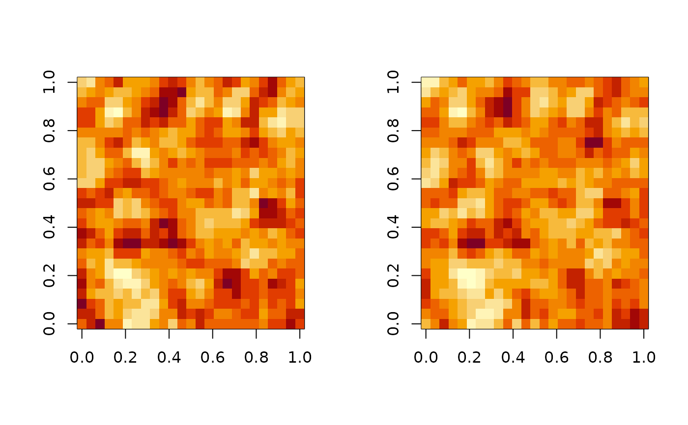

Correlated MA process
mvgridMA.RdIn our simulationstudy we also aim to find out how between sample correlation affects nominal size and power of our tests. This MA-process introduces correlation on two levels: Innovations and whole lattices. To do this, we first simulate two correlated white noise lattices \(\{\epsilon_i^{(1)}|i\in \mathbb Z^2\}\) and \(\{\epsilon_i^{(2)}|i\in \mathbb Z^2\}\) Where: $$\begin{pmatrix}\epsilon_i^{(1)}\\ \epsilon_i^{(2)}\end{pmatrix}\overset{iid}\sim\mathcal N(0, \Sigma)$$ With \(\Sigma = \begin{pmatrix}1 & \sigma\\ \sigma & 1 \end{pmatrix}\)
The two univariate moving average randomfieds simulated by this function are not only convoluted with their own white noise (with \(K_0, K_1\)) ,but also their correlated counterparts (with \(K_{0_{off}}, K_{1_{off}}\)): $$X_i^{(1)} = \sum_{j}\epsilon_{i-j}^{(1)}K_{0,j} + \sum_l \epsilon_{i-l}^{(2)}K_{0_{off}, l}$$ And analogous for \(X_i^{(2)}\).
Arguments
- N
`integer` First dimension of lattices
- M
`integer` Second dimension of lattices
- K0
\(K_0\), numeric `matrix` used for \(X_i^{(1)}\) to convolute with own white noise lattice
- K1
\(K_1\), numeric `matrix` used for \(X_i^{(2)}\) to convolute with own white noise lattice
- K0_off
\(K_{0_{off}}\), numeric `matrix` used for \(X_i^{(1)}\) to convolute with correlated counterpart
- K1_off
\(K_{1_{off}}\), numeric `matrix` used for \(X_i^{(2)}\) to convolute with correlated counterpart
- sigma
\(\sigma\), `numeric` for correlation between whitenoise
Examples
K <- MA_coef_all(.7)
K_off <- K * .5
x <- mvgridMA(25, 25, K, K, K_off, K_off, .4)
par(mfrow=c(1,2))
image(x$X1)
image(x$X2)
